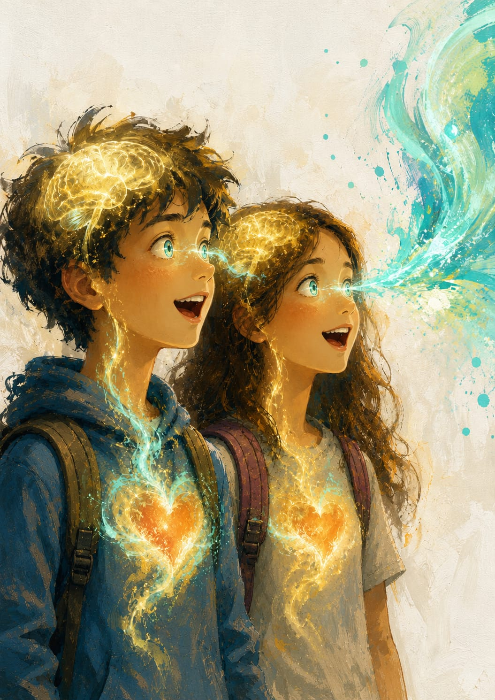
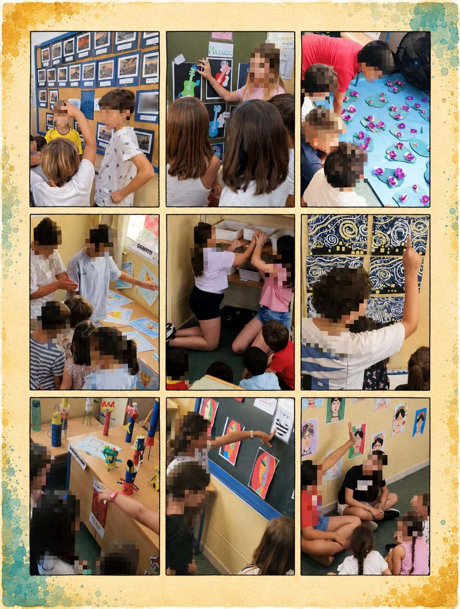
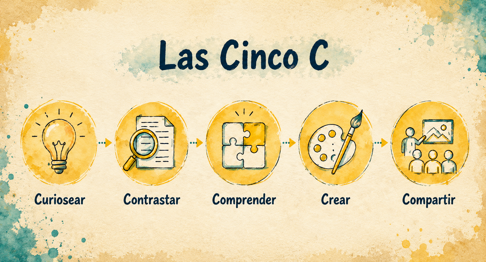
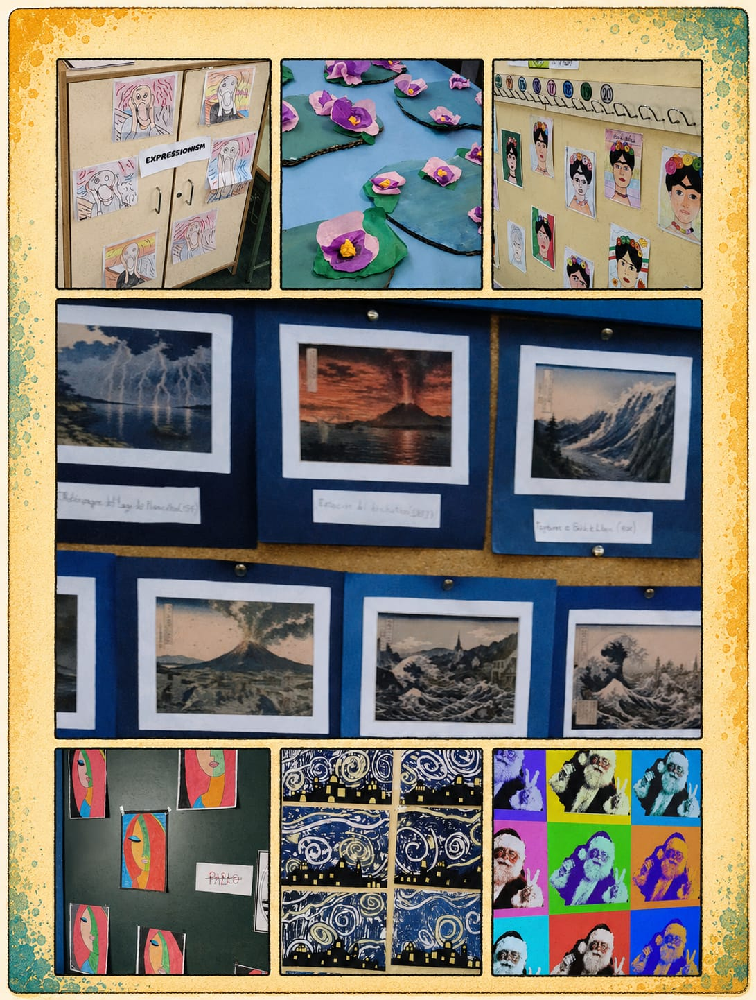

Curiosear
Se despierta la curiosidad mediante preguntas que necesitan respuestas.

CEIP Al-Ándalus
Descargar memoria completa (PDF)CANDIDATURA · PREMIOS SIMO EDUCACIÓN 2026
Antes de contemplar una obra, descubrimos a la persona que decidió crearla. Porque comprender al creador transforma para siempre la forma de mirar su creación.
COTILLE-ARTE es un proyecto anual de Educación Artística que propone una forma distinta de acercarse al arte. En lugar de comenzar observando una obra, el alumnado inicia el recorrido descubriendo la historia de quien la creó: sus curiosidades, sus dudas, sus anécdotas, sus miedos y el contexto que dio sentido a su creación.
Esta inversión del proceso convierte la curiosidad en el motor del aprendizaje y sitúa a los estudiantes como investigadores, creadores y divulgadores culturales dentro de una experiencia artística profundamente significativa.

El proyecto se articula mediante un itinerario de Aprendizaje Basado en la Curiosidad. Un viaje, desde la investigación hasta la divulgación, donde la necesidad de encontrar respuestas será su combustible.

Se despierta la curiosidad mediante preguntas que necesitan respuestas.
Investigan utilizando diferentes fuentes para comprobar la información.
Descubren el porqué de la obra comprendiendo la historia de quien la creó.
Desarrollan su propia producción artística aplicando lo aprendido durante el proceso.
Se convierten en guías culturales y divulgan el conocimiento adquirido.

COTILLE-ARTE continúa creciendo con nuevas alianzas destinadas a acercar el patrimonio cultural al alumnado. La futura colaboración con el Museo de Chiclana permitirá ampliar el proyecto, fortalecer el vínculo con el entorno y seguir convirtiendo la curiosidad en el punto de partida para aprender.